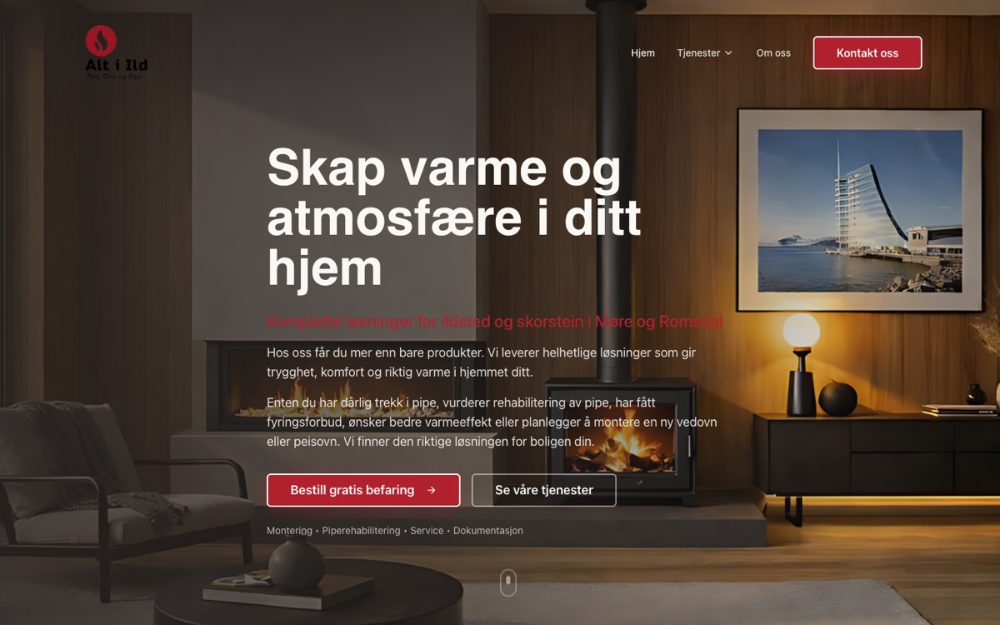

Forstå først
Vi må forstå problemet og arbeidsflyten før vi foreslår teknologi.
To gründere fra Molde
Ikke som enda et verktøy å passe på, men som en måte å fjerne gjentakelser, samle arbeidet og gi bedrifter bedre flyt.

Startet i Molde i 2026Utviklet for bedrifter i hele Norge
Historien vår
Kling ble startet i Molde i 2026 av to 21-åringer med tro på at kunstig intelligens og bedre systemer kan gjøre små og mellomstore bedrifter enklere å drive.
Vi så hvor mye tid som forsvinner i kopiering, manuell oppfølging og de samme oppgavene om igjen. Derfor bygger vi nettsider, automatisering og digitale systemer som flytter rutinearbeidet over til teknologien, samtidig som menneskene beholder oversikten og kontrollen.
Målet er ikke å bruke kunstig intelligens for enhver pris. Målet er å finne den enkleste løsningen som gjør en faktisk forskjell i arbeidshverdagen.
Slik tenker vi
Vi må forstå problemet og arbeidsflyten før vi foreslår teknologi.
Det som kan skje trygt og forutsigbart i systemet, bør ikke måtte gjøres manuelt hver gang.
Automatisering skal gi oversikt og avlastning, ikke gjøre arbeidet uforståelig.

Publisert prosjekt
Kling bygget nettsiden for Alt i Ild, en fagbedrift for peis, ovn, pipe og montering i Møre og Romsdal. Nettsiden presenterer tjenestene tydelig og gjør det enkelt å be om en gratis befaring.
Løsningsløftet
Vi undersøker problemet grundig og er tydelige på hva som faktisk er mulig. Før vi anbefaler en leveranse, får dere et konkret forslag til løsning eller en ærlig beskjed om hvorfor vi ikke mener det bør bygges. Løftet gjelder vurderingen og løsningsforslaget, ikke et bestemt forretningsresultat.
Ta kontakt
Henvendelser kan sendes hele døgnet. Vi har ikke faste åpningstider og svarer så snart vi kan.